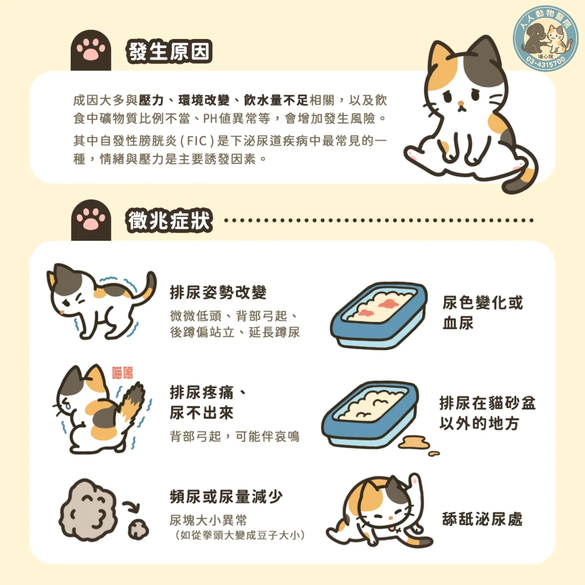
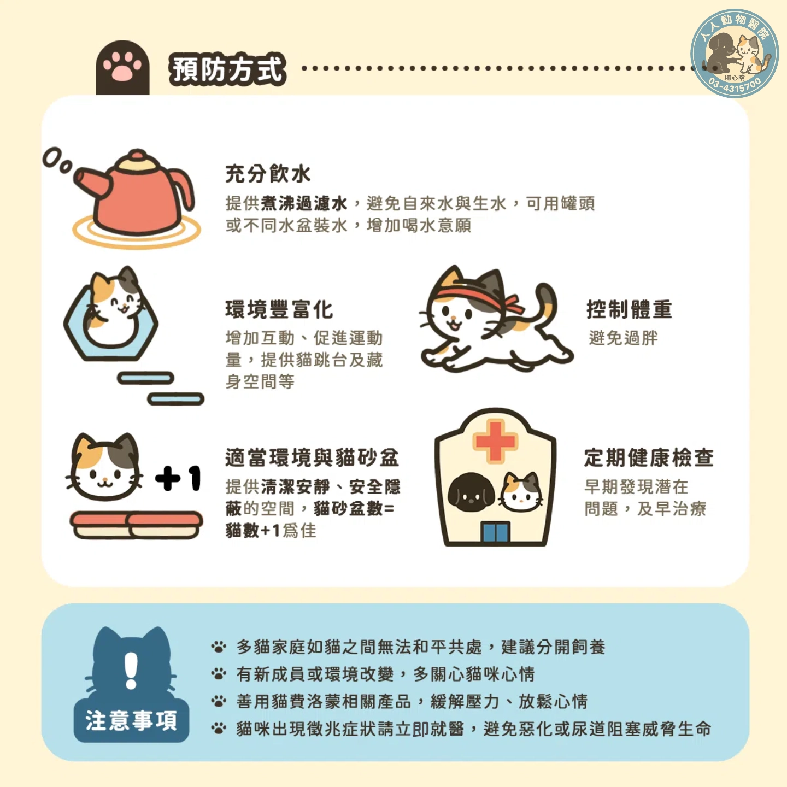

發生原因
💧 主要與壓力、環境改變、飲水量不足有關。
💧 飲食中礦物質比例異常或pH值不平衡也會增加風險。
💧 自發性膀胱炎(FIC)是下泌尿道疾病中最常見的類型， 其中情緒壓力是主要誘發因素。
疾病知識
治療目標：改善排尿異常、解除尿道阻塞，並降低復發風險。
💧 主要與壓力、環境改變、飲水量不足有關。
💧 飲食中礦物質比例異常或pH值不平衡也會增加風險。
💧 自發性膀胱炎(FIC)是下泌尿道疾病中最常見的類型， 其中情緒壓力是主要誘發因素。
🐱 排尿姿勢改變：低頭、背拱起、後腳偏站、延長蹲尿時間。
🐱 排尿疼痛或無法排尿：背部拱起,可能同時發出哀鳴。
🐱 尿液異常：尿色變深、出現血尿。
🐱 排尿地點改變：不在貓砂盆內排尿。
🐱 頻尿或尿量減少：尿塊大小變異(如從拳頭大小變成豆子大小)。
🐱 舔拭泌尿處：頻繁舔陰部表示不適。
🐾 充足飲水：提供煮沸過濾水,避免自來水或生水。使用不同水碗或噴泉式飲水器,提升飲水量。
🐾 環境豐富化：增加互動與活動量,提供跳台、藏身空間。
🐾 控制體重：避免肥胖以減少泌尿疾病風險。
🐾 適當環境與貓砂盆：保持乾淨、安靜、安全的如廁環境。 貓砂盆數量應為「貓數＋1」。
🐾 定期健康檢查：早期發現潛在問題並及時治療。
⚠️ 多貓家庭若有衝突,建議分開飼養。
⚠️ 有新成員或環境改變時,觀察貓咪壓力反應。
⚠️ 適當使用費洛蒙等安撫用品,幫助放鬆心情。
⚠️ 若出現異常排尿、血尿或疼痛,應立即就醫,避免惡化或造成尿道阻塞。


本網站內容僅提供一般知識參考， 不能取代獸醫師的診斷與治療。